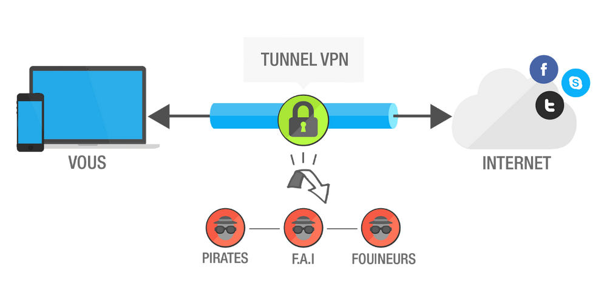

Définition:
En informatique, un réseau privé virtuel ou réseau virtuel privé, plus communément abrégé en VPN, est un système permettant de créer un lien direct entre des ordinateurs distants, qui isole leurs échanges du reste du trafic se déroulant sur des réseaux de télécommunication publics. - Wikipedia.fr
Le VPN crée un tunnel sécurisé entre votre appareil et un serveur VPN privé avant d’acheminer votre trafic vers le site Web ou l’application que vous visitez.
Cela empêche les fournisseurs d’accès Internet (FAI) et les autorités de suivre ce que vous faites en ligne. Il vous protège également contre les pirates informatiques qui cherchent à intercepter votre trafic.
Les VPN sont-ils sûrs ?
Un VPN digne de confiance est une première étape inestimable pour protéger votre vie privée et rester en sécurité en ligne.
Le mauvais VPN peut :
- Enregistrer votre activité de navigation
- Échouer à chiffrer vos données
- Partager vos données avec les autorités
- Laisser fuir vos informations d’identification
- Infecter votre appareil avec des logiciels malveillants
Le VPN tient-il des journaux ?
L’un des aspects les plus importants d’un service VPN est sa politique de journalisation.
Lorsque vous utilisez un VPN, vous confiez au fournisseur de VPN l’ensemble de votre trafic Internet. Ce qui inclut votre adresse IP, tous les sites Web que vous visitez, les messages que vous envoyez et toutes vos données personnelles.
Où le VPN est-il basé ?
L’endroit où une société VPN est basée, autrement dit sa “juridiction” peut avoir un impact énorme sur la confidentialité de vos données personnelles.
Certains pays sont impliqués dans des alliances internationales de partage de renseignements appelées Five-Eyes, Nine-Eyes et Fourteen-Eyes. En termes de confidentialité, ces pays sont les pires endroits pour implanter une société de VPN.
Source -Pypo.eu
Pour plus d'informations, vous pouvez consulter :